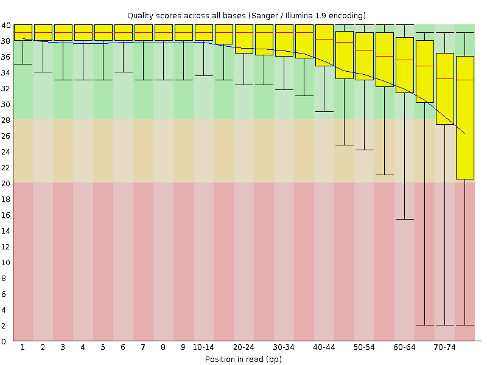
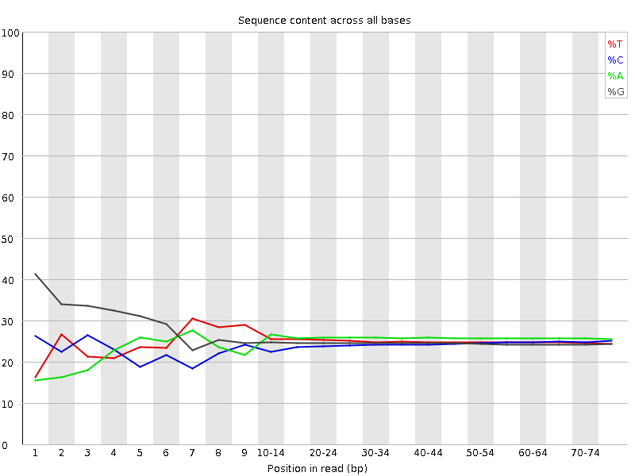
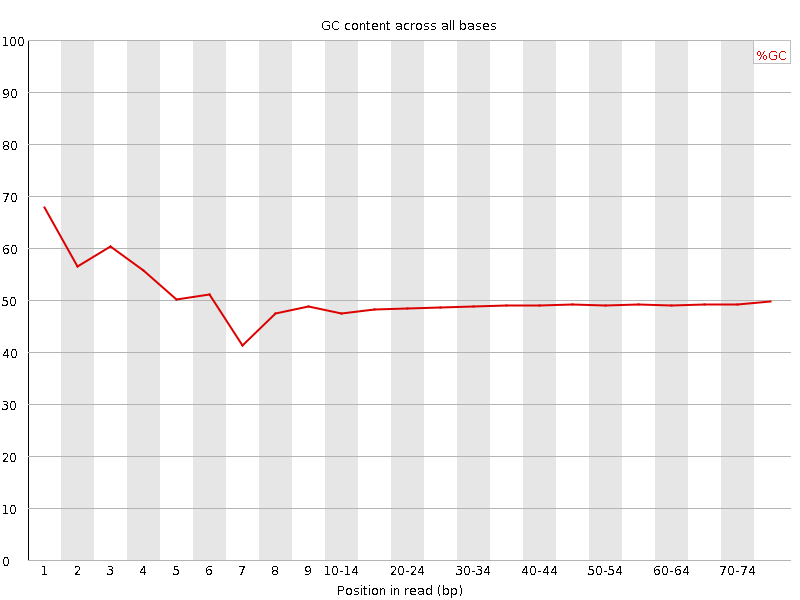
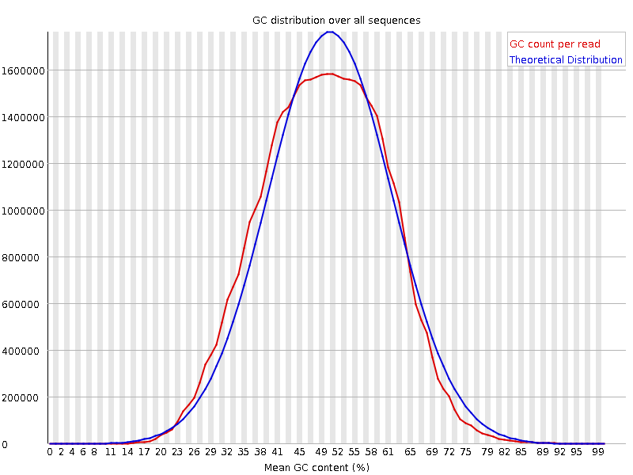
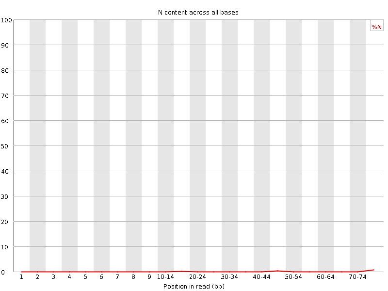
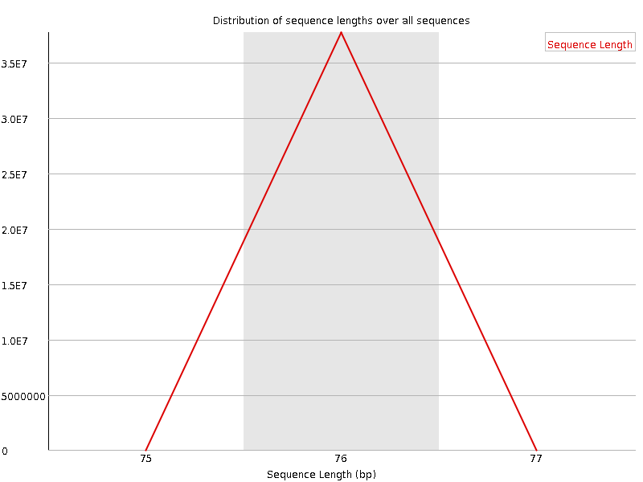
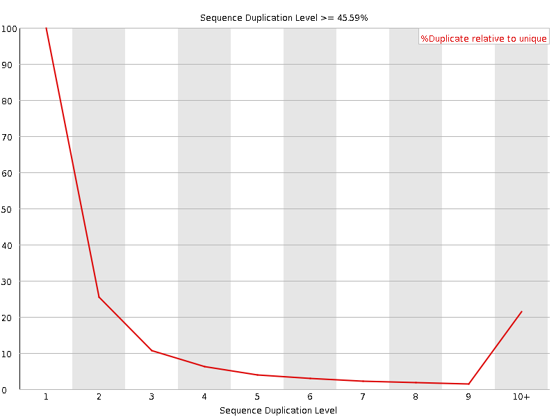
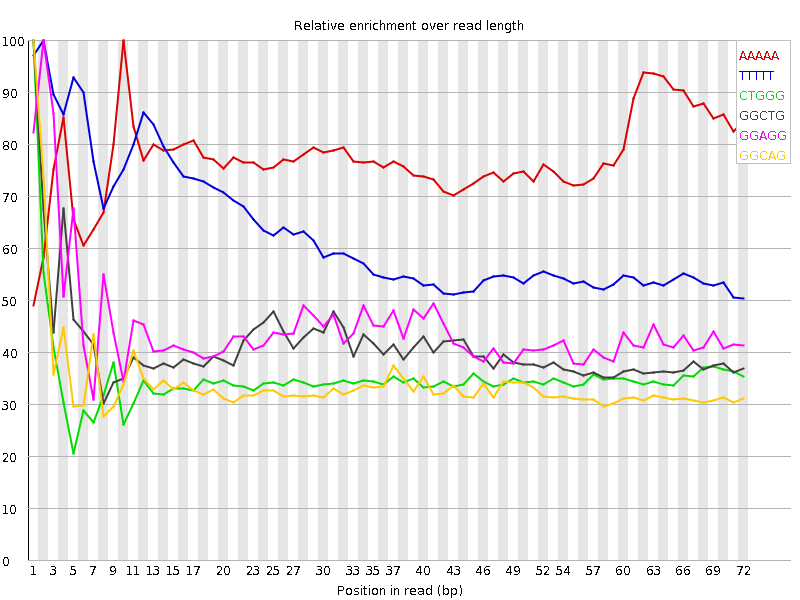

![[OK]](Icons/tick.png) Basic Statistics
Basic Statistics
| Measure | Value |
|---|---|
| Filename | SRR307910_1.fastq |
| File type | Conventional base calls |
| Encoding | Sanger / Illumina 1.9 |
| Total Sequences | 37693376 |
| Filtered Sequences | 0 |
| Sequence length | 76 |
| %GC | 49 |
Per base sequence quality

Per sequence quality scores

![[FAIL]](Icons/error.png) Per base sequence content
Per base sequence content

Per base GC content

Per sequence GC content

Per base N content

Sequence Length Distribution

![[WARN]](Icons/warning.png) Sequence Duplication Levels
Sequence Duplication Levels

Overrepresented sequences
No overrepresented sequences
Kmer Content

| Sequence | Count | Obs/Exp Overall | Obs/Exp Max | Max Obs/Exp Position |
|---|---|---|---|---|
| AAAAA | 9372565 | 3.21326 | 4.1509247 | 10 |
| TTTTT | 8192440 | 3.1058712 | 4.9395266 | 2 |
| CTGGG | 6639170 | 2.5078819 | 7.139597 | 1 |
| GGCTG | 6329995 | 2.3910937 | 5.822065 | 1 |
| GGAGG | 6706100 | 2.3743103 | 5.2981653 | 2 |
| GGCAG | 6355445 | 2.3528957 | 6.8798957 | 1 |
| GCTGG | 6175740 | 2.332826 | 5.9284167 | 1 |
| GGGAG | 5817000 | 2.0595224 | 6.799684 | 1 |
| GGGGG | 5516125 | 1.9687771 | 10.164937 | 1 |
| TGGGG | 5320510 | 1.9220172 | 5.6571693 | 2 |
| GGGCA | 4997520 | 1.8501682 | 5.801584 | 1 |
| GGGGA | 4772965 | 1.6898794 | 8.607033 | 1 |
| GGGGC | 4450265 | 1.6608775 | 5.4491053 | 2 |
| GGGAA | 4562115 | 1.602281 | 5.3054004 | 1 |
| GTGGG | 4402505 | 1.5903908 | 8.150699 | 1 |
| GGGTG | 4283850 | 1.5475271 | 5.2092857 | 2 |
| GGGGT | 3889850 | 1.4051957 | 6.566268 | 1 |
| CGGGG | 2661530 | 0.9933059 | 7.336108 | 1 |